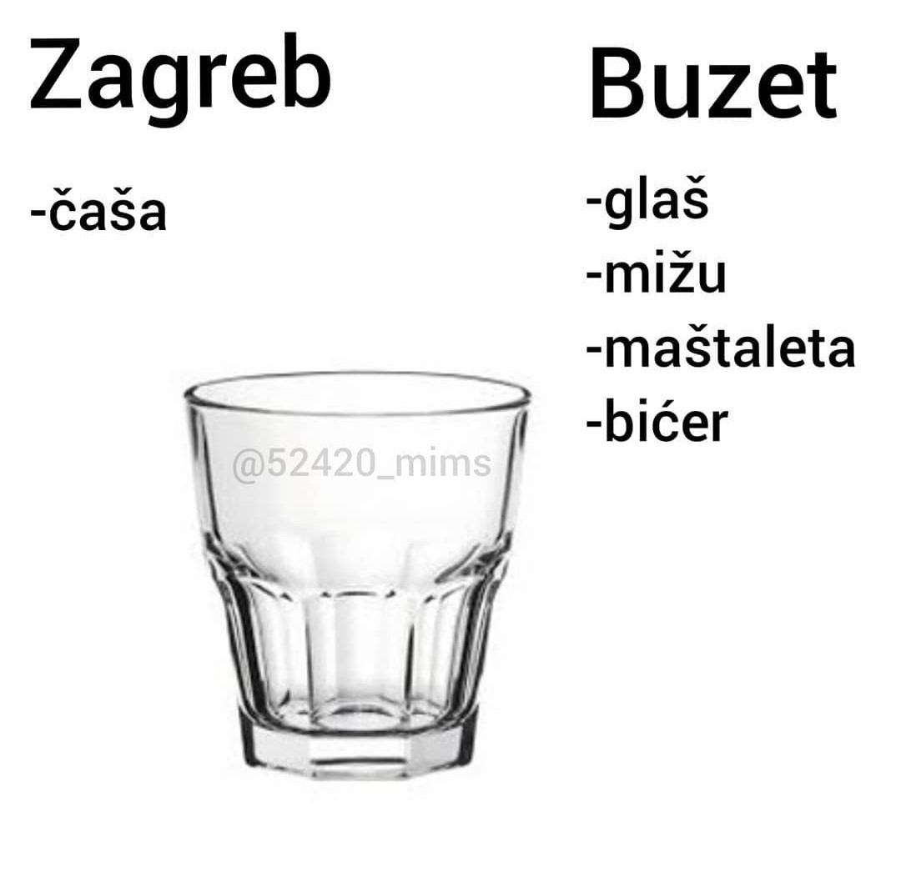
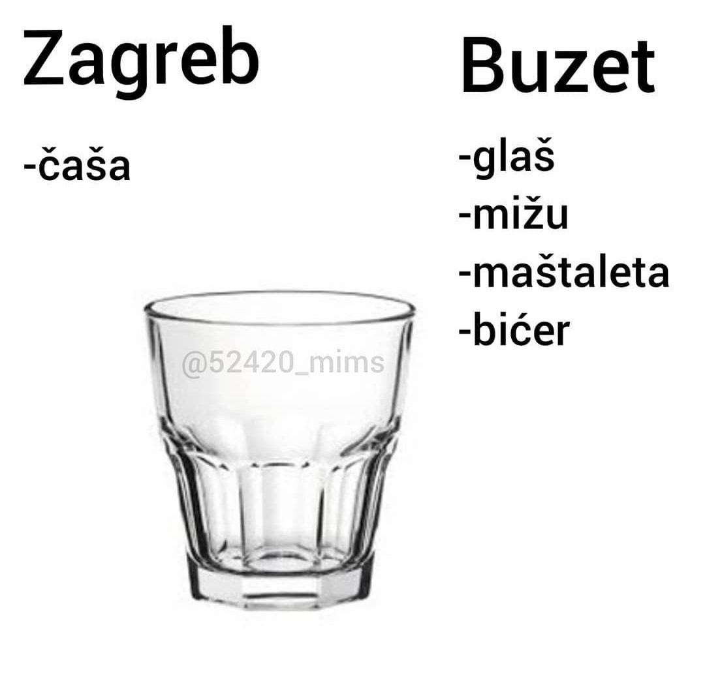

Istra i Buzet su obilježili veliki dio mog života, ipak sam tamo provela 19 godina, okružena prirodom, Ćićarijom i Učkom, morem i dobrim ljudima,
oni su moj doma, dom mojih roditelja i koliko god voljela Zagreb nekako se uvijek nađem u čežnji za domom. Mislim da mi najviše fali pašareta,
crveno gazirano piće koje Istra čuva za sebe,čula sam glasine kako se može nabaviti u Zagrebu, al nije to isti čar kao što je sjesti u kafić u Istri i naručiti pašaretu.
Osim toga, čisto zvjezdano nebo, maneštra, prijatelji i istarski dijalekt mi također jako fale kad sam u Zagrebu.
Od kad sam prešla Učku i došla u Zagreb mnogi misle kako sam i ja Zagrebčanka zbog mojeg "kajkanja".
Razlog tomu je to što iako je Istra pervenstveno područje čakavskog narječja grad u kojem sam odrastala ima specifični Buzetski dijalekt,
koji je zapravo prijelaz čakavskog prema slovenskim dijalektima što mu daje čakavsko kajkavske osobine.
Zato Buzečani, kao i ja jedini u Istri govorimo na KAJ!
U čast mnogim Buzetskim govorima učenici srednje škole Buzet sastavili su Mali riječnik Buzetskih govora, knjigu koju sam i ja pomogla ilustrirati.
Istarske/Buzetske fraze koje često koristim:
bo
ćemo ben (ma ben)
Kaj ne kapiješ?
tra
vero
Gremo ponjer na neka pijača?
Najdraže riječi Istraske pjemse:
Sve pasiva
sve će dojti na svoje
snamom ili bez mene
znaj da razlike ni'
Pusti stati
ča je bilo je bilo
niš ne moreš kambjati
i u istem kolu smo svi. - Livio Morosin
 
